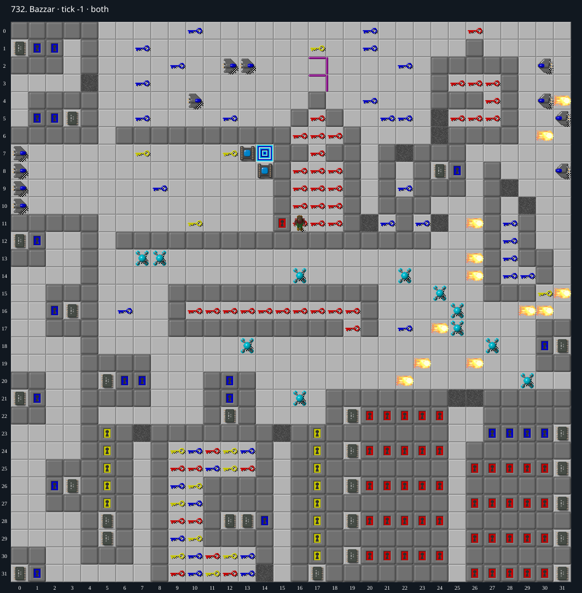

Jacques · Original Tile World MS
732. Bazzar
Impossibility argumentAt least 46 red keys are needed for the start gate and nine mandatory chip alcoves, but only 45 red keys exist.
52 chips required · 320 second time limit
Why completion is impossible
- All 52 chips are mandatory because both entrances to the sole exit are sockets
- Nine sealed chip alcoves each require opening five red doors (45 total)
- The starting chamber has a different red door as its sole exit, costing at least one more key
- Only 45 red keys exist across both layers, so at least 46 are needed but at most 45 can be obtained
- The second red door under the starting doorway is not counted in this lower bound
- There are no blocks, cloners or teleporters; monsters cannot open red doors or create red keys.
Inspect both layers
The main map shows the initial runtime state. Switch to the buried layer to inspect hidden terrain and items. Hover coordinates are also available in the downloadable SVG.


Recorded checks and attempts
- structural resource proof: Prove-middle.ts asserts all nine sealed pockets, five red doors per pocket, the separate mandatory starting gate, 45 red keys across both planes, and 52 chips required/present.
- native doorway-layer probe: The first passage through the doubled starting door consumes one key and leaves the lower door behind. The proof counts only one required starting key, avoiding the false assumption that the first crossing consumes two.